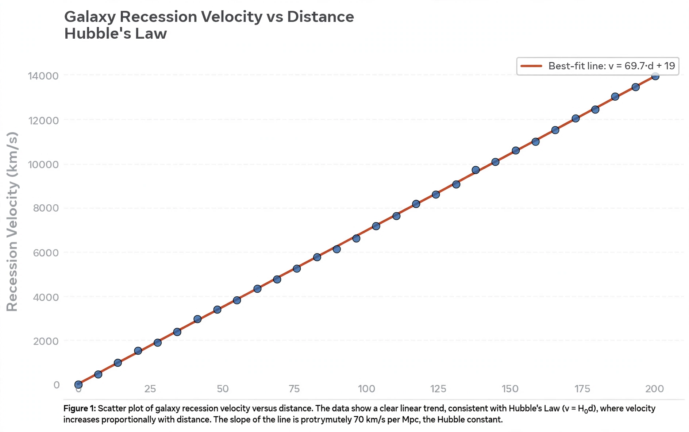

Hubble's law
| Statement | v = H₀ × d |
|---|---|
| Formulated | 1927 (Lemaître, theory); 1929 (Hubble, observations) |
| Constant | Hubble constant H₀ ≈ 67–73 km/s/Mpc (disputed) |

[Image: Scatter plot of galaxy recession velocity against distance showing the linear Hubble relation]Hubble's law, also known as the Hubble–Lemaître law, is the observation in physical cosmology that galaxies are moving away from Earth at speeds proportional to their distance: the further they are, the faster they move away. The velocity is measured from the galaxies' redshift, interpreted as a Doppler-like effect of the expansion of space itself.
The law is expressed v = H₀d, where H₀ is the Hubble constant. Belgian priest-physicist Georges Lemaître derived the relation theoretically and estimated the constant from data in 1927; Edwin Hubble published the empirical relation in 1929, and in 2018 the International Astronomical Union recommended the name Hubble–Lemaître law. Hubble's law was the first observational evidence for an expanding universe and hence for the Big Bang.
The Hubble constant and the tension
Hubble's original value of H₀ (about 500 km/s/Mpc) implied an impossibly young universe, owing to calibration errors; revisions through the twentieth century brought it down by nearly an order of magnitude, and the 'Hubble wars' between rival camps (~50 vs ~100) lasted decades. Today the value inferred from the Cosmic microwave background under the standard ΛCDM model (Planck satellite: 67.4 km/s/Mpc) differs by about 9% — well beyond the quoted errors — from local measurements using Cepheids and supernovae (~73), a discrepancy known as the Hubble tension and a possible hint of new physics.
Interpretation
The relation is not motion through space but the expansion of space itself: at sufficiently large distances 'recession velocities' exceed the speed of light without violating relativity. The inverse of H₀ (the Hubble time) gives a rough age for the universe, and the law's breakdown at small distances (where peculiar velocities dominate) and at large redshift (where the expansion history matters) is used to measure Dark energy and the universe's composition.